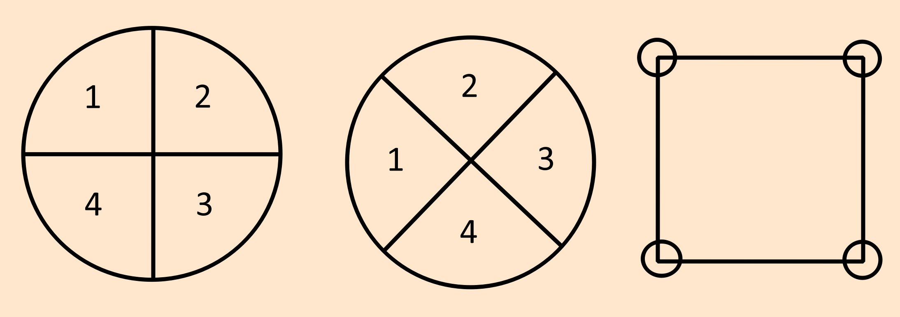

The major archetype of 4 is the four seasons. You can split two into four, a strong(positive) negative, weak(negative) negative. Strong positive, weak positive.
Geometry
In the proceeding diagrams you will notice a change in the flow or direction of numbers.
Its your choice which way it goes, but the one shown below is a seasonal wheel.
Correspondences
2 in this represents absolute positive while 4 is absolute negative. 1 and 3 are positive neutral and negative neutral.
| 1 | 2 | 3 | 4 |
|---|---|---|---|
| Spring | Summer | Autumn | Winter |
| Air | Fire | Water(/earth) | Earth(/water) |
| Intellect | Will | Emotions | Body |
| East | South | West | North |
| Sunrise | Noon | Sunset | Midnight |
| Infancy | Youth | Adulthood | Old Age |